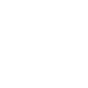

Primary
Platforms Code primary #1B8354. Use on white and light backgrounds.
هوية · Brand guidelines
A UI library built to comply with the DGA Platforms Code.
Hawiyah provides design tokens, styles and accessible components for government digital platforms. These guidelines define the wordmark, colors, typography and usage rules, all based on the Platforms Code foundations.
Hawiyah is maintained independently and is not an official product of the Digital Government Authority.
01 / Wordmark
The logo is the Arabic word هوية set in Aref Ruqaa Bold and converted to vector outlines. It has no separate symbol and no Latin lettering. The same wordmark is used in Arabic and English interfaces.
Platforms Code primary #1B8354. Use on white and light backgrounds.
Platforms Code default text #161616. Use where color is restricted, such as print or official correspondence.
White, or primary-50 #F3FCF6, on the primary color or the dark background #111927.
Clear space and size
Keep at least 12 units of clear space around the artwork on its 144 × 112 grid. The minimum interface width is 48 CSS pixels. Use the dedicated favicon for browser tabs.
Do not mirror, stretch, rotate or recolor the wordmark outside the approved variants, and do not separate its letters. Do not add a symbol or English text beneath it. When the wordmark links to a home page, give it an accessible name such as “Hawiyah home”.
02 / Color
The identity uses the Platforms Code theme variables without modification. Each color keeps the role it has in the Platforms Code, and every text pairing below meets the WCAG 2.2 AA contrast requirement for normal text.
#1B8354button-background-primary-default. Primary actions and the wordmark. White text: 4.75:1.
#F3FCF6background-primary-50. Subtle primary surfaces. Default text: 17.29:1.
#F9FAFBbackground-body. Page background. Primary text: 4.55:1.
#161616text-default. Body text. On the body background: 17.32:1.
In dark mode, the Platforms Code uses the background #111927, surfaces #1F2A37, white text (17.61:1) and primary text #54C08A (7.79:1). Primary buttons keep #1B8354 with white text. Test any new pairing, overlay, interaction state or chart separately, and never communicate status through color alone.
03 / Typography and writing
Interface text uses IBM Plex Sans Arabic, the Platforms Code typeface, with IBM Plex Sans for Latin text. The Aref Ruqaa lettering is reserved for the wordmark. Arabic text keeps a generous line height and its connected letterforms.
خدمات واضحة.
إجراءات مفهومة.
تُصمَّم الواجهات لمساعدة المستفيدين على إكمال الخدمة بدقة ووضوح.
IBM Plex Sans Arabic · عادي ٤٠٠ / شبه عريض ٦٠٠Clear services.
Understandable steps.
Interfaces are designed to help beneficiaries complete each service accurately and clearly.
IBM Plex Sans · Regular 400 / Medium 550Name actions with the terms beneficiaries recognize. State what happened, then the next required step. Avoid promotional language and unexplained technical terms in service messages.
حُفظت التغييرات. يمكنك مراجعتها قبل الإرسال.
Changes saved. You can review them before submitting.
هوية in Arabic and Hawiyah in Latin script. Use sentence case for English interface text and no letter spacing in connected Arabic.
مكتبة واجهات مبنية للامتثال لكود المنصات.
Standard description: “A UI library built to comply with the DGA Platforms Code.”
04 / Application
This specimen applies the identity to a standard form. Compare the light and dark appearances, enter Arabic or English text, and save a sample name.
#1B8354 with white text in both appearances.This is a brand specimen. The component library defines the complete interaction, validation and accessibility behavior.
05 / Motion
The loader writes the wordmark in a reconstructed handwriting order: the hook, bowl and inner stroke of hāʾ, then the joined wāw head and tail; after a pen lift, yāʾ flows into the loop of tāʾ marbūṭa, followed by the two-dot strokes below yāʾ and above tāʾ marbūṭa. Each 3.6-second loop holds the complete word, clears and restarts. When reduced motion is preferred, the static wordmark replaces the animation.

The loader is decorative. Always pair it with a translated loading status in text. See the reduced-motion usage example.
06 / Compliance
Hawiyah is built to comply with the Platforms Code issued by the Digital Government Authority. Each requirement is traced to its implementation, with test evidence and open items recorded in the repository.
A product built with Hawiyah must still be assessed against the Platforms Code as a whole, including its content, services and integrations.
07 / Files
Every wordmark file contains outlined Aref Ruqaa Bold lettering only. No font download or component dependency is needed. Select the variant that matches the background.
The wordmark uses Aref Ruqaa Bold, shaped and outlined from its unmodified upstream font file. The font is an offline artwork input only, never an application style or package dependency.
Font licenses: Aref Ruqaa, IBM Plex Sans Arabic and IBM Plex Sans. Keep the relevant notices with redistributed source fonts. Hawiyah code, documentation and artwork use the Apache License 2.0; upstream fonts retain their OFL terms.
The symbol, Arabic, English and bilingual filenames are compatibility aliases. Each contains the same Arabic wordmark.